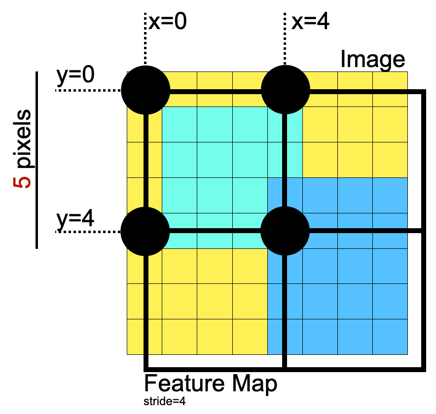

Models
On this page
Models¶
For now, see Method section in our publication [KBA19] for an architecture overview.
Base Networks¶
The following types of base networks have implementations and can be used with the --basenet command line argument for training. Not all base networks are well optimized and you can consult the Introduction for benchmark results.
list(openpifpaf.BASE_FACTORIES.keys())
['mobilenetv2',
'mobilenetv3large',
'mobilenetv3small',
'resnet18',
'resnet50',
'resnet101',
'resnet152',
'resnext50',
'resnext101',
'shufflenetv2x1',
'shufflenetv2x2',
'shufflenetv2k16',
'shufflenetv2k20',
'shufflenetv2kx5',
'shufflenetv2k30',
'shufflenetv2k44',
'squeezenet',
'swin_t',
'swin_s',
'swin_b',
'swin_b_window_12',
'swin_l',
'swin_l_window_12',
'xcit_nano_12_p16',
'xcit_tiny_12_p16',
'xcit_tiny_24_p16',
'xcit_small_12_p16',
'xcit_small_24_p16',
'xcit_medium_24_p16',
'xcit_large_24_p16',
'xcit_nano_12_p8',
'xcit_tiny_12_p8',
'xcit_tiny_24_p8',
'xcit_small_12_p8',
'xcit_small_24_p8',
'xcit_medium_24_p8',
'xcit_large_24_p8',
'effnetv2_s',
'effnetv2_m',
'effnetv2_l',
'effnetv2_xl',
'effnetv2_s16_s',
'effnetv2_s16_m',
'effnetv2_s16_l',
'effnetv2_s16_xl',
'botnet',
'tshufflenetv2k16',
'tshufflenetv2k30',
'tresnet50',
'cifar10net']
Pretrained Models¶
The current list of pretrained models is below and you can use them with the --checkpoint argument. Not all pretrained models are well optimized and you can consult the Introduction for benchmark results.
[c for c, u in openpifpaf.CHECKPOINT_URLS.items() if isinstance(u, str)]
['shufflenetv2k30-animalpose',
'shufflenetv2k16-apollo-24',
'shufflenetv2k16-apollo-66',
'shufflenetv2k30-apollo-66',
'mobilenetv2',
'mobilenetv3small',
'mobilenetv3large',
'resnet50',
'shufflenetv2k16',
'shufflenetv2k16-withdense',
'shufflenetv2k30',
'swin_s',
'swin_b',
'swin_t_input_upsample',
'mobilenetv3small-cocodet',
'resnet18-cocodet',
'resnet50-crowdpose',
'shufflenetv2k16-nuscenes',
'tshufflenetv2k16',
'tshufflenetv2k30',
'shufflenetv2k16-wholebody',
'shufflenetv2k30-wholebody']
Headmeta¶
Headmeta (see openpifpaf.headmeta) is a class that holds configuration data about a head network. It is instantiated in a DataModule (above) and used throughout OpenPifPaf to configure various other parts. For example, the cocokp head meta instances are:
openpifpaf.plugins.coco.CocoKp().head_metas[0]
Cif(name='cif', dataset='cocokp', head_index=None, base_stride=None, upsample_stride=1, keypoints=['nose', 'left_eye', 'right_eye', 'left_ear', 'right_ear', 'left_shoulder', 'right_shoulder', 'left_elbow', 'right_elbow', 'left_wrist', 'right_wrist', 'left_hip', 'right_hip', 'left_knee', 'right_knee', 'left_ankle', 'right_ankle'], sigmas=[0.026, 0.025, 0.025, 0.035, 0.035, 0.079, 0.079, 0.072, 0.072, 0.062, 0.062, 0.107, 0.107, 0.087, 0.087, 0.089, 0.089], pose=array([[ 0. , 9.3 , 2. ],
[-0.35, 9.7 , 2. ],
[ 0.35, 9.7 , 2. ],
[-0.7 , 9.5 , 2. ],
[ 0.7 , 9.5 , 2. ],
[-1.4 , 8. , 2. ],
[ 1.4 , 8. , 2. ],
[-1.75, 6. , 2. ],
[ 1.75, 6.2 , 2. ],
[-1.75, 4. , 2. ],
[ 1.75, 4.2 , 2. ],
[-1.26, 4. , 2. ],
[ 1.26, 4. , 2. ],
[-1.4 , 2. , 2. ],
[ 1.4 , 2.1 , 2. ],
[-1.4 , 0. , 2. ],
[ 1.4 , 0.1 , 2. ]]), draw_skeleton=[(16, 14), (14, 12), (17, 15), (15, 13), (12, 13), (6, 12), (7, 13), (6, 7), (6, 8), (7, 9), (8, 10), (9, 11), (2, 3), (1, 2), (1, 3), (2, 4), (3, 5), (4, 6), (5, 7)], score_weights=[3.0, 3.0, 3.0, 1.0, 1.0, 1.0, 1.0, 1.0, 1.0, 1.0, 1.0, 1.0, 1.0, 1.0, 1.0, 1.0, 1.0], decoder_seed_mask=None, training_weights=None)
openpifpaf.plugins.coco.CocoKp().head_metas[1]
Caf(name='caf', dataset='cocokp', head_index=None, base_stride=None, upsample_stride=1, keypoints=['nose', 'left_eye', 'right_eye', 'left_ear', 'right_ear', 'left_shoulder', 'right_shoulder', 'left_elbow', 'right_elbow', 'left_wrist', 'right_wrist', 'left_hip', 'right_hip', 'left_knee', 'right_knee', 'left_ankle', 'right_ankle'], sigmas=[0.026, 0.025, 0.025, 0.035, 0.035, 0.079, 0.079, 0.072, 0.072, 0.062, 0.062, 0.107, 0.107, 0.087, 0.087, 0.089, 0.089], skeleton=[(16, 14), (14, 12), (17, 15), (15, 13), (12, 13), (6, 12), (7, 13), (6, 7), (6, 8), (7, 9), (8, 10), (9, 11), (2, 3), (1, 2), (1, 3), (2, 4), (3, 5), (4, 6), (5, 7)], pose=array([[ 0. , 9.3 , 2. ],
[-0.35, 9.7 , 2. ],
[ 0.35, 9.7 , 2. ],
[-0.7 , 9.5 , 2. ],
[ 0.7 , 9.5 , 2. ],
[-1.4 , 8. , 2. ],
[ 1.4 , 8. , 2. ],
[-1.75, 6. , 2. ],
[ 1.75, 6.2 , 2. ],
[-1.75, 4. , 2. ],
[ 1.75, 4.2 , 2. ],
[-1.26, 4. , 2. ],
[ 1.26, 4. , 2. ],
[-1.4 , 2. , 2. ],
[ 1.4 , 2.1 , 2. ],
[-1.4 , 0. , 2. ],
[ 1.4 , 0.1 , 2. ]]), sparse_skeleton=None, dense_to_sparse_radius=2.0, only_in_field_of_view=False, decoder_confidence_scales=None, training_weights=None)
When a new network is created, information from the head metas will be used to create the appropriate torch graph for the heads. It will use the type of the head meta (openpifpaf.headmeta.Cif, openpifpaf.headmeta.Caf, …) and information like the number of keypoints in Cif or the number of skeleton connections in Caf to know how many feature maps to create.
Similarly, the decoder will look for heads that are of type headmeta.Cif and headmeta.Caf to instantiate the CifCaf decoder.
To get started, have a look how the head metas are created in CocoKp for new pose datasets and in CocoDet for new detection datasets.
Coordinate System¶
When adding your own datasets or transformations, it is good to keep in mind the coordinate system that OpenPifPaf assumes. The short summary is, everything is done in such a way that annotation coordinates only need to be multiplied by the image rescaling factor without offset. Therefore, the (0, 0) feature map needs to be aligned with the (0, 0) pixel.

This also shows that training image sizes must be a multiple of the network stride plus one, i.e., in the above image, an input image size of \(5\times5\) would be optimal for a feature map of size \(2\times2\) because the stride is 4.